Introducción
El diagrama Hertzsprung- Russell, abreviado como diagrama H-R, es un gráfico que exhibe la relación entre las luminosidades de las estrellas y sus temperaturas efectivas superficiales. Dicho diagrama fue creado en forma independiente por los astrónomos Ejnar Hertzsprung y Henry Norris Russell en las primeras décadas del siglo XX.
Historia
A comienzos del siglo XX, mientras los astrónomos acumulaban datos de una gran cantidad de estrellas, percibieron el variado rango de luminosidades y magnitudes absolutas. Las estrellas O en uno de los extremos de la secuencia de Harvard tendían a ser más brillantes y calientes que las estrellas M en el extremo opuesto. Además, la relación Masa-Luminosidad, partiendo del estudio de sistemas binarios, mostró que las estrellas O eran más masivas que las estrellas M. Esto llevó a una teoría ya hoy desacreditada de evolución estelar en la que las estrellas empezaban su vida como estrellas O azules y calientes, y que al envejecer y "quemar su combustible gravitatorio" (no se conocían otras fuentes de energía, como las reacciones nucleares) se enfriaban y se convertían en estrellas M rojas. Aunque incorrecta, un vestigio de la idea permanece en los términos de tipos espectrales tempranos y tardíos.
Un ingeniero y astrónomo aficionado danés, Ejnar Hertzsprung (1863-1967), analizó estrellas cuyos tipos espectrales y magnitudes absolutas habían sido calibrados con precisión. En 1905 publicó un documento confirmando una correlación entre dichas cantidades. Sin embargo, descubrió que estrellas G o más tardías poseían un rango de magnitudes variado, a pesar de poseer la misma clasificación espectral. Hertzsprung denominó como gigantes a las estrellas más brillantes. Esta nomenclatura era natural dado que la ley de Stefan-Boltzmann establece que para dos estrellas, consideradas como cuerpos negros, de una misma temperatura efectiva (mismo tipo espectral), la estrella más luminosa debe ser más grande.
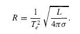
Ecuación 1: Ecuación del radio en función de la luminosidad y la temperatura, derivada de la ley de Stefan Boltzmann.
Mientras E. Hertzsprung presentaba sus hallazgos, en la Universidad de Princeton, Henry Norris Russell (1877-1957) llegaba en forma independiente a las mismas conclusiones. Denominó como gigantes a las estrellas luminosas de tipo espectral tardío, y enanas a sus contrapartes de menor brillo. En 1913 H. Russell publicó un diagrama con 200 estrellas (Figura 1), a las cuales se les conocía la distancia, donde el eje horizontal representaba a los tipos espectrales y el eje vertical representaba a las magnitudes absolutas. Identificó una banda diagonal correspondiente a la hoy denominada secuencia principal, que contiene entre el 80% y 90% de todas las estrellas del diagrama.
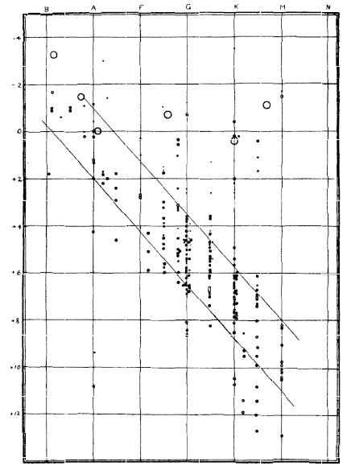
Figura 1: Diagrama de Russell de 1914. Las estrellas aparecen encolumnadas de acuerdo a su tipo espectral.
Versiones alternativas del diagrama H-R
Otra versión del diagrama es el llamado H-R observacional donde el eje vertical corresponde a las magnitudes absolutas y el eje horizontal a los colores B-V (Figura 2). Diagramas de esta índole son denominados diagramas color-magnitud.
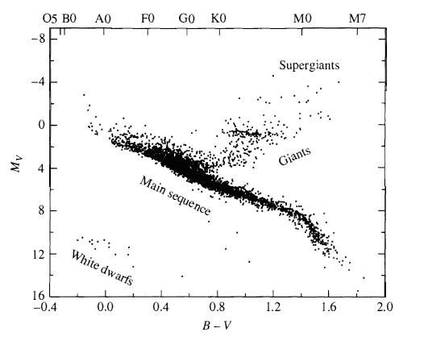
Figura 2:Diagrama color-magnitud de datos extraídos del Catálogo Hipparcos. Más de 3700 estrellas aparecen representadas aquí.
Otra versión del diagrama H-R, llamado teórico, contiene a las luminosidades en el eje vertical y la temperatura efectiva en el eje horizontal. El eje vertical del diagrama expresa en forma logarítmica a las luminosidades con respecto a la del Sol.
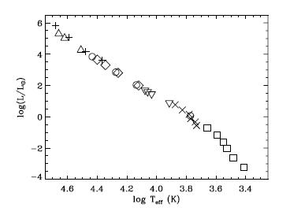
Figura 3: Diagrama H-R teórico de la secuencia principal de edad cero de estrellas de población I. (Figura extraída de Allen's Astrophysical Quantitiesp. 29, por Cox, A. N. Springer, 2001.)
Grupos distintivos en el diagrama H-R
Como se ha mencionado antes, en una franja casi diagonal de cada diagrama H-R (Figura 4) se ubica la secuencia principal. Las estrellas gigantes ocupan la región por encima de la secuencia principal inferior (estrellas de secuencia principal de baja masa, y de tipos espectrales tardíos) con las supergigantes, como Betelgeuse, en el extremo superior derecho del diagrama. Las enanas blancas, yacen bien debajo de la secuencia principal.
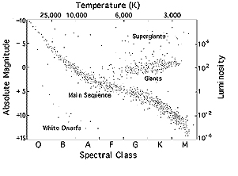
Figura 4: Diagrama H-R donde se indican los grupos distintivos. Las luminosidades son relativas a la luminosidad solar.
Clases de luminosidad Morgan-Keenan
E. Hertzsprung se preguntó si existía alguna diferencia en los espectros de estrellas gigantes y de secuencia principal del mismo tipo espectral. Encontró dicha variación en las estrellas catalogadas por Antonia Maury, quien había encontrado diferencias en los anchos de las líneas. Dichos trabajos culminaron en la publicación del Atlas of Stellar Spectra (Atlas de Espectros Estelares) de William W. Morgan (1906-1994) y Phillip C. Keenan (1908-2000) del Observatorio de Yerkes. Dicho atlas, también llamado MKK Atlas por su tercera coautora Edith Kellman, estableció el sistema bidimensional Morgan-Keenan (M-K) de clasificación espectral. Una clase de luminosidad, designada por un numeral romano, es agregada al tipo espectral de Harvard de la estrella. El numeral “I” (subdividido en clases Ia y Ib) está reservado para las supergigantes, y las “V” para las estrellas de secuencia principal. En general, para estrellas del mismo tipo espectral, la existencia de líneas más angostas indica estrellas más luminosas. Otros objetos del sistema M-K como las subenanas, ubicadas ligeramente a la izquierda de la secuencia principal y deficientes en metales, poseen “VI” o “sd” como denominación para su clase de luminosidad. Las enanas blancas son clasificadas con la letra “D” pero el sistema M-K no se extiende a ellas.
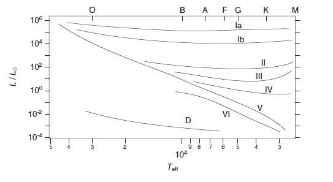
Figura 5: Diagrama H-R simplificado donde se muestran las distintas clases de luminosidad.
El sistema bidimensional de clasificación M-K permite a los astrónomos localizar la posición de una estrella en el diagrama H-R basados enteramente en la apariencia de su espectro. Una vez que la magnitud absoluta “M” de la estrella ha sido leída del eje vertical del diagrama H-R, su distancia puede calcularse desde su magnitud aparente “m” vía la siguiente ecuación, derivada del módulo de distancia, donde “d” es la distancia en pársecs (despreciando la absorción interestelar, Av):
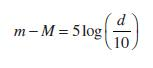
Ecuación2: Ecuación del módulo de distancia.
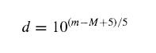
Ecuación3: Ecuación derivada del módulo de distancia.
Dicho método se denomina paralaje espectroscópica, aunque dicho nombre es incorrecto, pues no involucra paralaje alguna. Su precisión es limitada porque no existe una perfecta correlación entre magnitudes absolutas y clases de luminosidad. La dispersión intrínseca es de aproximadamente una magnitud para una clase de luminosidad específica, provocando una incerteza en la distancia por un factor de 1/6.
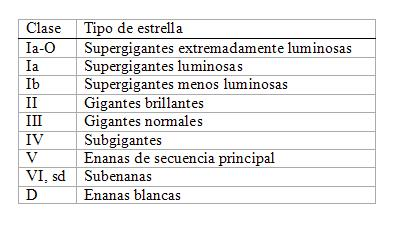
Figura 6: Tabla de clases de luminosidad MKK.
La relación entre el radio y la masa
El radio de una estrella puede determinarse de su posición en el diagrama H-R. La ley de Stefan-Boltzmann demuestra que si dos estrellas (consideradas como cuerpos negros) poseyeran la misma temperatura superficial, pero una de ellas fuese 100 veces más luminosa que la otra, entonces el radio de la estrella más luminosa sería 10 veces más grande.
A partir de ecuación de Stefan-Boltzmann, se puede demostrar que en el diagrama H-R teórico existen rectas (pendiente con 4) de R constante:
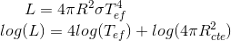
Ecuaciones 4 y 5: Ecuación de Stefan-Boltzmann y Ecuación derivada.
Las estrellas de secuencia principal toman valores entre 0.1 y 20 radios solares. Las gigantes, entre 10 y 100 radios solares. Por ejemplo, Aldebarán, una estrella gigante naranja en la constelación de Tauro posee 45 masas solares. Las supergigantes pueden tener radios entre 20 y 2500 radios solares. Por ejemplo, Betelgeuse, una supergigante roja y variable pulsante, se contrae y expande entre 700 y 1000 veces el radio del Sol (con un período de 2070 días).
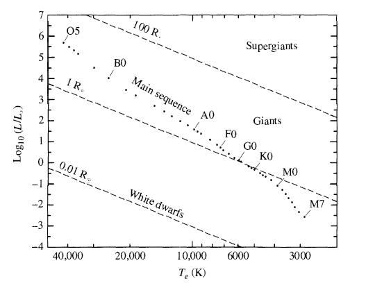
Figura 7: Al graficar la ecuación 5 en un diagrama H-R, variando los radios, aparecen múltiples rectas.
La existencia de la simple relación entre luminosidad y temperatura para estrellas de secuencia principal es una pista valiosa de que la posición de una estrella en dicha secuencia está gobernada por un solo factor: la masa. Para estrellas de secuencia principal, la relación entre la masa y el radio es aproximadamente lineal (Figura 8), mientras que la luminosidad se incrementa en forma más rápida que la masa (Figura 9). Esto surge de la dependencia de la luminosidad en el radio estelar y la temperatura superficial efectiva (Ecuación 4). La luminosidad de una estrella está determinada por las reacciones nucleares en su interior, que dependen de la temperatura central.
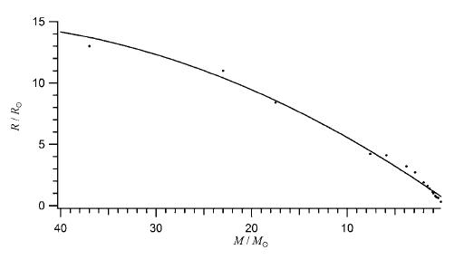
Figura 8: Diagrama de la relación entre la masa y el radio para estrellas de secuencia principal(en puntos). (Figura extraída de An Introduction to Stellar Astrophysics.p. 29, por LeBlanc, F. Wiley, 2010.)
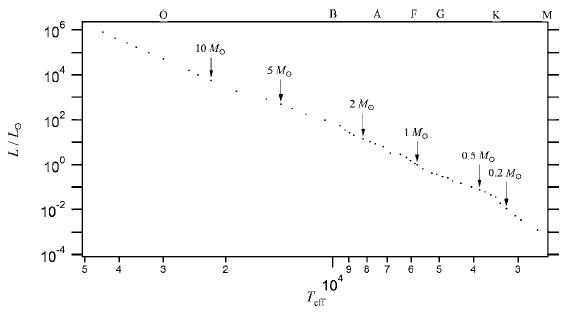
Figura 9: Diagrama H-R de Secuencia Principal con varias masas marcadas (Figura extraída de An Introduction to Stellar Astrophysics. p.27, por LeBlanc, F. Wiley, 2010.)
Por varios motivos, una cierta dispersión puede hallarse en cada región del diagrama. Por ejemplo, con el paso del tiempo, las estrellas se desplazan en el diagrama. Incluso las estrellas de la secuencia principal, en el cual sus estructuras cambian durante la producción de helio en el núcleo. Otro motivo es la metalicidad que pueden tener las estrellas. Esto conlleva a cambios estructurales que modifican su posición en el diagrama H-R. Las subenanas poseen bajas metalicidades. Esto implica que tengan menores radios y temperaturas efectivas superiores a una estrella de secuencia principal de la misma masa. Dichas temperaturas pueden explicarse por las capas superiores se ubican más cerca del núcleo. Radios inferiores conducen a flujos superiores, y por lo tanto a temperaturas superiores. Los errores observacionales también pueden ser causa de la dispersión.
El diagrama H-R y la evolución estelar
El diagrama H-R es extremadamente útil para estudiar la evolución de las estrellas. Durante la evolución de una estrella, tanto la temperatura efectiva superficial como el radio varían. Por lo tanto, también su tipo espectral cambiará. Las estrellas, entonces, ocupan diferentes posiciones en el H-R, que al graficarlos generan "caminos" bien definidos. Estos caminos evolutivos dependen principalmente de la masa estelar.
Referencias
Carroll, B.W. & Ostlie, D.A. (2007) An Introduction to Modern Astrophysics. Segunda Edición. Pearson.
LeBlanc, F. (2010) An Introduction to Stellar Astrophysics. Wiley.
Cox, A.N. (2001) Allen's Astrophysical Quantities. Cuarta Edición. Springer.
Stellar Evolution - Cycles of Formation and Destruction (2012, July 03). Recuperado de http://chandra.harvard.edu/edu/formal/stellar_ev/story/index3.html

Comments (0)